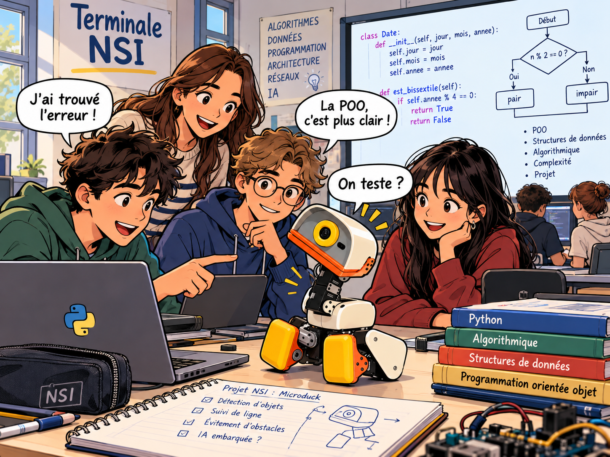

Une question, une expérience, une découverte.
Les agents IA ?
On les apprivoise.

Bienvenue dans le labo !Moi, c’est Microduck. On apprend en essayant ?
Microduck / compagnon de laboTon premier agent commence ici
Comprends les agents IA.
Programme-les. Observe leurs décisions.
Un laboratoire interactif pour découvrir comment les agents intelligents perçoivent leur environnement, prennent des décisions et utilisent des outils.
U01.1 · Essai accompagné · Commander n’est pas déplacer
01 / La carte de ton aventure
Une idée à la fois.
Un agent qui prend forme.
Commander
n’est pas déplacer
Prévois deux tentatives de Microduck, observe le résultat, puis raisonne avec Nora et un curseur.
Parcours élève et préparation enseignante distincts · Durée à mesurer
Ouvrir le module 01Les prochaines pages du carnet En préparation
- ProgrammerÀ venir · approfondir les politiques Python
- PlanifierÀ venir · décomposer un objectif
- Utiliser des outilsÀ venir · relier l’agent au monde
- Construire un agent LLMÀ venir · langage et décisions
- Évaluer et sécuriserÀ venir · mesurer et encadrer
02 / La paillasse numérique
Que produit
la commande choisie ?
Dans U01.1, garde la même règle et observe deux tentatives. Le parcours fournit toutes les données nécessaires avant l’expérience.
La grille et le journal sont réels. Nora et le curseur se traitent dans les activités de la leçon.
Suivre U01.1 →Commencer par la prédiction, puis ouvrir le laboratoire de la leçon.
L’agent connaît sa position, la cible et les obstacles. Le chemin direct est coupé par un mur.
observation → politique → action03 / Les bons réflexes
Apprendre avec méthode
- 01
Comprendre
Décrire ce que l’agent observe et ce qu’il cherche.
- 02
Expérimenter
Faire un pas. Lire la décision. Changer de stratégie.
- 03
Programmer
Écrire une politique Python et voir son effet.
- 04
Évaluer
Comparer les résultats et expliquer les limites.
04 / La bibliothèque du labo
La curiosité a ses sources.
Pour prolonger l’expérience vers les agents à modèles de langage.
LE COURS · EN FRANÇAISHugging Face — Agents Course ↗ LA PUBLICATION · YAO ET AL.ReAct : raisonner et agir ↗ LE GUIDE · ANTHROPICBuilding Effective Agents ↗